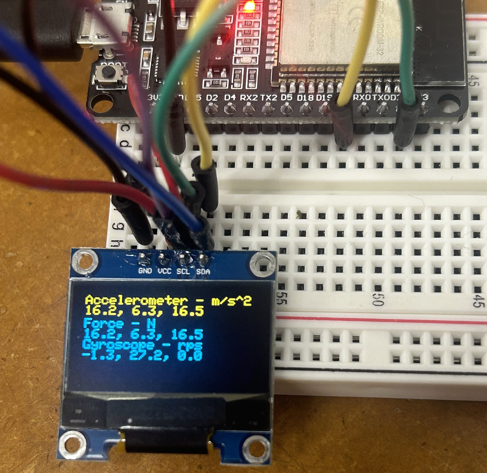

Week 7: Electronic Outputs
Assignment: Minimum Viable Product for Final Project
Final Project Overview
For my final project, I aim to develop a smart sports system that monitors key characteristics like the angle, spin, speed, and impact force of a soccer ball kick. Having access to this information in real-time would be beneficial for players to track and improve their technique. I'm still deciding on the best way to integrate the electronics. My current options include embedding them in a cleat, a 3D-printed soccer ball, or even goalkeeping gloves. For instance, pressure-sensitive gloves could provide useful data on grip strength and ball-catching techniques.
Minimum Viable Product (MVP) Task
Given the scope of my project, my priority this week was to focus on tracking force and acceleration. After consulting with Nathan, I concluded that using an accelerometer and gyroscope would be the best approach. I found an MPU-6050 sensor in the makerspace, so my goal was to display its values on an OLED screen.
MVP Assembly
Bill of Materials
1. ESP32
2. 2x Breadboard
3. OLED Display
4. MPU6050 Accelerometer and Gyroscope


Using the above pinout diagrams, I constructed the following circuit:
Writing Code
For my initial code, I referenced Week 7: Electronic Output Devices on the PS70 website for the OLED code and consulted a tutorial for setting up the ESP32 Dev Boards with Arduino.
Using the provided code as a foundation, I modified it to calculate and display acceleration values on the OLED. Initially, the output was not as expected—it displayed X, Y, and Z values corresponding to angular motion, which only changed when tilting the sensor.
However, my goal was to track acceleration when moving the sensor horizontally or vertically, and then use that to calculate the force. To achieve this, I switched to a simpler Arduino library—Adafruit MPU6050—and used the MPU_oled example as a base. I updated the OLED parameters and added a calculation for force using the formula `force = mass * acceleration`, setting the mass to an arbitrary value of 1.0 for proof of concept. In future iterations, I will put more thought into an accurate value for the mass. This worked as intended, and I observed the expected results on the OLED. Below is the updated Arduino code:
Understanding the Data
At first, I didn't understand what I was looking at on the display and so I did some research on this site.The accelerometer measures the change in velocity or acceleration along the X, Y, and Z axes in meters per second squared (m/s²). For example, when the sensor is stationary, the Z-axis shows a value close to 9.8 m/s² due to the force of gravity. As I move the sensor along a specific axis, either up or down or side to side, the values adjust accordingly.
The gyroscope tracks the rotational speed around the X, Y, and Z axes in radians per second (rps), reflecting how fast the device is rotating about each axis.
Video Demonstration
These three videos demonstrate the acceleration and force values changing when I move the sensor along the three different axes.
Final Project 3D Model
Next Steps
I noticed that my display values would keep getting stuck after moving the sensor back and forth quickly a few times. Below is an example of the screen when it got stuck. This could be attributed to the connections in the breadboard not being stable enough. After shaking the board enough times, they would come undone. Based on this, I know that going forward I need to work on soldering these connections in place so that the circuit runs more continuously. I also need to work on miniaturizing this circuitry into a protoboard that can eventually fit within my device in whatever form it takes whether it be a shoe, goalie glove, or ball.
Device Time Domain
I wanted to analyze the clock signal of the SSD1306 OLED display using an oscilloscope and determine if the device operates on a fixed clock, as well as measure the clock speed.
To monitor the clock signal, an oscilloscope probe was connected to the SCL pin, and the ground probe was connected to a suitable ground point in the circuit.
- The oscilloscope was configured to capture the clock signal by setting the appropriate time division to observe the square wave pattern generated on the SCL line.
- The signal was analyzed to measure the period between rising or falling edges of the square wave, allowing me to calculate the clock frequency.
- The I2C clock signal was monitored for consistency, ensuring it operated on a fixed frequency.
Clock Type
Upon connecting the oscilloscope to the SSD1306’s SCL pin, a consistent square wave signal was observed. This signal corresponds to the clock pulse that synchronizes data transmission between the Arduino and the display. Therefore, the SSD1306 operates on a fixed clock.
Clock Speed
The clock signal frequency was measured at 400 kHz, indicating the display is utilizing Fast Mode I2C communication.